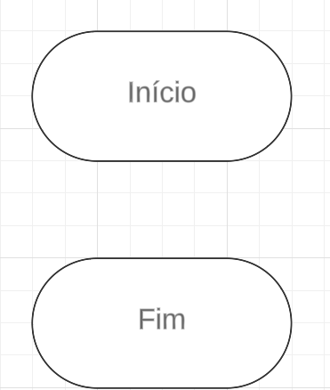
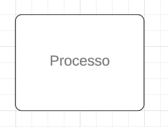
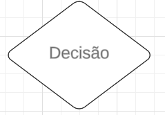
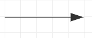
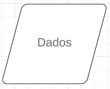
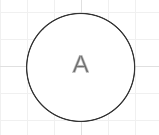

Um pouco de nossa programação:
Visando nos integrar no mercado mundial tecnológico com agilidade e proatividade, nossa linguagem base para back-end e HTML dinâmico é o JavaScript, com um conhecimento avançado na utilização da placa de prototipagem Arduíno, a linguagem C++. Por isso, queremos demonstrar nossa capacidade de criação de diversos algorítmos nessas duas diferentes linguagens. Um exemplo de nossa programação em JavaScript dinâmico está a seguir:
Ordenação de números aleatórios em um Array de modo crescente
Ordenação de números aleatórios em um Array de modo decrescente
Exemplo de uso for:
Elaborar um programa que crie uma pilha de 1 até 5 e exiba os números na tela e após isso retire-a utilizando o método LIFO (Last In, First Out)
Exemplo de uso if/else:
Digite um número e descubra se é par ou impar:
Exemplo de uso else-if:
Digite a nota 1 de um aluno:
Digite a nota 2 de um aluno:
Digite a nota 3 de um aluno:
Ordenação de array 's em Bubble Sort (8, 3, 7, 1, 3, 8, 6, 6, 9):
Ordenação de array 's em Inserction Sort (9, 4, 7, 1, 3, 8, 2, 6, 5):
Ordenação de array 's em Selection Sort (2, 4, 8, 1, 3, 8, 5, 6, 10):
Exemplo de uso while:
Aumento de salário registrado na tela começando com 1000:
Ordenação de listas/pilhas de modo crescente ou decrescente com números aleatórios:
Criação de matrizes e soma de números impares/pares
Soma de matrizes:
Verificação e soma dos elementos divisíveis por 3 na matriz
Vídeos de explicação sobre os métodos de ordenação
Fluxogramas
Um fluxograma é uma representação visual de um processo ou fluxo de trabalho, que utiliza símbolos padronizados para ilustrar as etapas, decisões e interações envolvidas. Ele serve como uma ferramenta de comunicação eficaz, facilitando a compreensão de processos complexos de maneira clara e concisa.
Os principais símbolos utilizados em fluxogramas incluem:
Elipse (ou oval): Representa o início e o fim do processo. É utilizado para indicar onde o fluxo começa e onde ele termina.

Retângulo: Simboliza uma etapa ou ação do processo. Cada retângulo contém uma descrição da atividade que deve ser realizada.

Losango: Representa uma decisão ou ponto de ramificação no fluxo. Este símbolo é utilizado para indicar que uma escolha deve ser feita, levando a diferentes caminhos dependendo da resposta (por exemplo, "sim" ou "não").

Seta: Indica a direção do fluxo do processo. As setas conectam os diferentes símbolos, mostrando a sequência de ações e decisões.

Paralelogramo: Usado para representar entradas e saídas de dados, como informações que são recebidas ou resultados que são gerados.

Círculo: Pode ser utilizado para conectar partes diferentes de um fluxograma, especialmente quando o espaço é limitado ou para indicar que o fluxo continua em outra parte do diagrama.

Fluxogramas desenvolvidos pela empresa
Desenvolvemos diversos fluxogramas para os nossos clientes compreenderem o processo que cada algorítmo toma para resolver um problema utilizando principalmente o programa Lucidchart ou br modelo. Alguns exemplos são os de ordenação Bubble Sort, Selection Sort e Insertion Sort, já mencionados anteriormente, podem ser entendidos também como fluxogramas. Ademais, temos outros exemplos como verificação de se números digitados pelo usuário são pares ou impares demonstrando a seguir:
.png)
Contato
Programador-chefe: Guilherme Tomaz Silva
Telefone: (48) 99672-3858
Email: guilhermesilva81prof@gmail.com